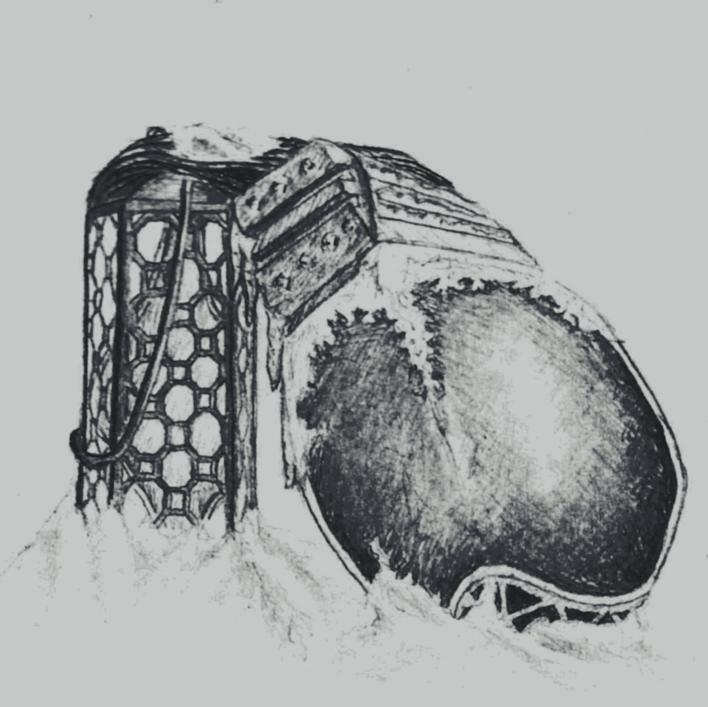
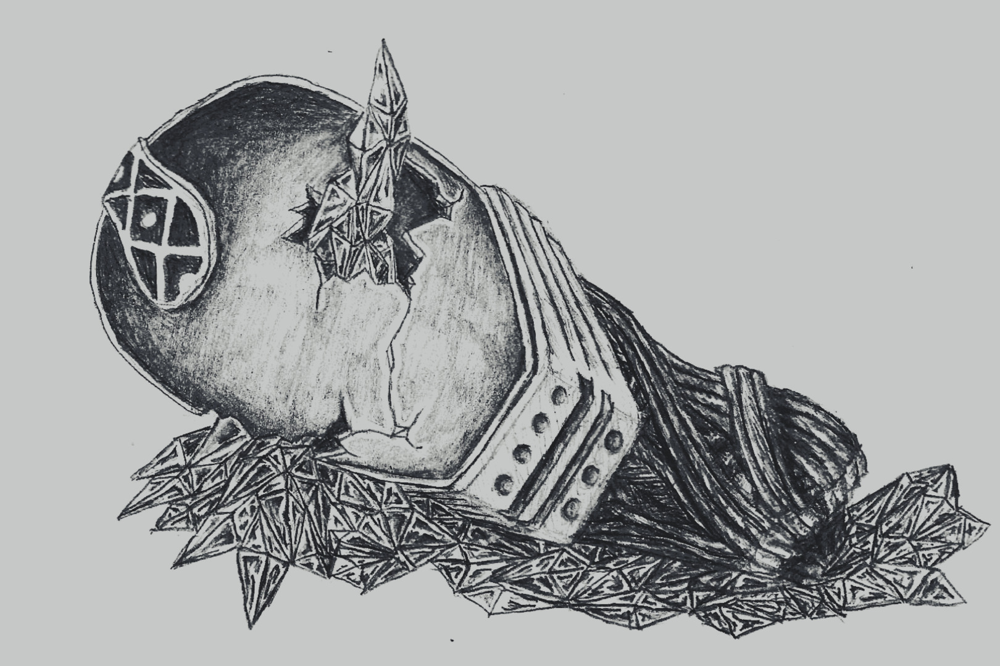
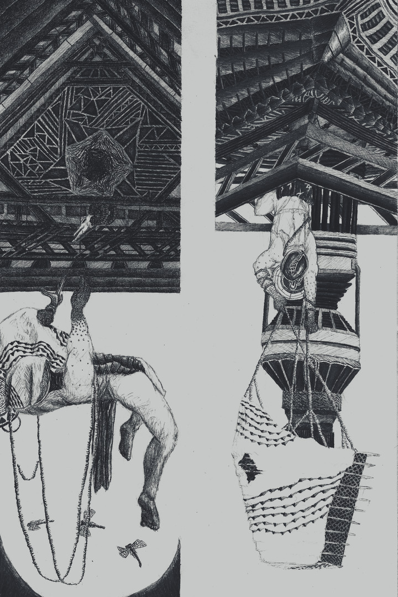
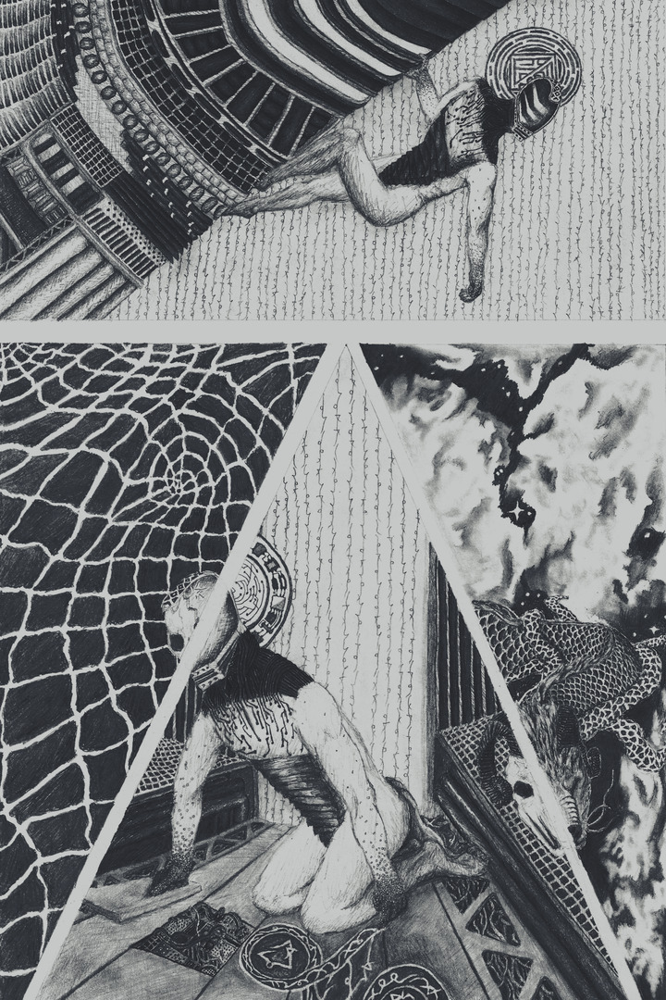
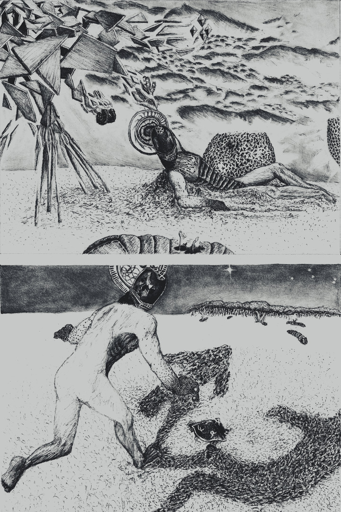
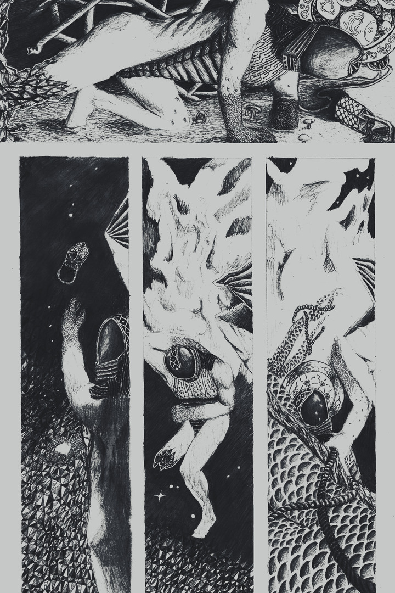

S I G N A L - E A T E R
T O R O I D - F O R E S T

N U L L I N G - L A T T I C E

S U N K E N - M O U N T A I N

A Ballad of Sundered Aegis
tap or hover to latinize

- Crystalline vines with latticed lines
- at briefest reef follow my feet,
- refracting shines in eyes of mine,
- to buck and birl me to stone seat.
- I'm sullen to see far sea drift
- extends the current observing,
- I lay my head to never lift
- and hope for rest I'm deserving.
- And staring at both ailing suns,
- a loathsome, midday blue dulls stars
- over obtainable spectrums,
- I can't spy old homesun pulsars,
- nor horns of serpent runaway
- that streekt from freak hollows that cracked
- in outer arms of nebulae,
- which cradled me when more intact.
- Where go the void? Am I woken?
- I'm lost afloat sea asimmer.
- Devoid of most copernican
- of sentiments, I'm set center,
- as per tycho-modelled cycle,
- muddled scribes of prideful mindings,
- unfit to find archetypal
- humbled vibes from spaceward sightings.
- Cause: my nightspore test in falter,
- effect: broke spatial symmetries
- and high order cosmographer
- buckled to basic binaries,
- where empties roam with keen beckon
- and loom with lensing bend in gleams
- to dangle weapons we'd not reckon,
- jettisoning gamma ray streams.
- A solar lightnings' carving stun,
- had waxing feathered in aether,
- post-klaxon hum of trauma done,
- prunes galactic blooms to wither.
- Hither struggled, struggling still,
- head weighing from gravitation,
- bothers more than shrugging winds' shrill
- wavering of kite in motion.
- Then, low orbit imitations,
- stellations of tetrahedrands,
- aglow raw grit scintillations,
- well oceans out from tearing glands,
- as if my ship that dust the skies,
- that gave grief on way and to leave,
- reflects as real in my eyes -
- I've lost escape with no reprieve.
- In fleeing squall unknown to me,
- I cut anchored familiar
- which sank me near instantly,
- consigning lapsed inferior
- to briny, planetary churn
- of tame oceans' laconic soak,
- tugging parachute taciturn,
- with lame, aphonic, coastal choke.
- In silent scream absorbed in grasp
- of black, long made before the fall,
- my mouth agape emits no rasp
- on stereo radio call
- of ceaseless noises, double-talk,
- a drowning EM tidal crest
- through lowlands loch that acts to block
- my call of distress: "just to rest..."
- No rest there was, I would not keep
- out there because exosuits leak
- cool air to heat with quick'ning beep,
- those caught who want exit ought seek.
- Bursting steam clouds my panoptics,
- I toe streams I dare to wade through,
- putting trust in field magnetics,
- my rusting armour pays its due.
- With metal-wrap and high-grade gloves,
- I'm nervous thing on offhand lam,
- poor chap jaded and strayed from love,
- far out of reach of friends and fam,
- I drove myself through endless void
- and found myself in blinding fogs,
- alive with self, not paranoid
- where only self could haunt the bogs.
- But sensors in sinew don't soothe
- these systems trained as danger sleuth,
- the shapes bored brains make from the smooth
- and spikes of noise mistook for truth.
- The isolation of the mist
- have wits reform and nerves revive
- in deprivation, tightened fist
- does not affirm that I'll survive.
- The fact, which hid beneath the hurt
- I felt when in the way of harm,
- is that my heart's ever alert
- and that my suit would false alarm.
- I see the choice that's left in mire
- what remains I cannot eschew,
- I can fear what has been prior
- or harbour fear of something new.
- But comforts come from certainty
- and thrumming of monotonies,
- a metronomic tendancy
- helps isolate anomalies
- and formerly-perceptual,
- conceptual consternations
- are cancelled-out predictable,
- perpetual palpitations.
- Deterministic anxious waves
- of bugs in ears and fungus grown,
- are all thats left in coward caves,
- I've chosen to suffer the known.
- ... 'til worry of higher degrees
- is wearing pocked and fissured plates,
- to swap the odds of bayes' likelies,
- inciting me to unknown fates.
- Befriending shadows on the wall,
- pretending comfort's what I felt
- did not stop magma curtain call
- as lava flows where shadows dwelt.
- I see in vain with eyes wide shut
- as pupils strain with contraction,
- with darkness gone my lie in rut
- was futile to vie with action.
- Not to be mistaken for brave,
- my sprint to screaming frequencies,
- was more a run from painful grave
- of lustful molten rock and seas.
- When clouded chaos quiets some,
- approaching shores of placid dunes,
- I know the cause when that plight come,
- the deserts' dry, decrepit croons.

- The sea of glass is forming rift
- to vast periphery skyline
- with quaking shift of sands in sift
- to ebb this heavy head of mine.
- But edged where grains can fall both ways,
- atop a point langrangian,
- I'm safe as last man of blank bays,
- but subject to blare gaussian.
- Those sisyphean oft ashame,
- they'd dream to take this battle slow,
- frenetic static hits me same
- yet makes my thin bones rattle so.
- I wrestle neck up to behold,
- the old-world mechanistic grind
- of what is digging gap foretold,
- a whining and machinic kind.
- Bevy of antennas wired,
- rhizomes strafing past afloating,
- adjoint to roaming ore spired
- via hanging mast it's toting.
- Forlorn hoverer, overdrawn,
- does fawn over a gaping black,
- seems tired with yawn held upon,
- does it drag hole or hole drag back?
- I'm sick of this, I just want home,
- I've no such form to face the dawn,
- of tricks of light nor migraine chrome,
- this is not norm for brittle-born
- whose worn and crappy shell would split
- like licks of flame in dry biome,
- like origami delicate
- from war-torn, age-old, langsyne tome.
- It seems my hands are ill-defined,
- exclusion principles resign,
- I'm swimming in space undefined
- no pull to which I can align.
- With frantic swiping at the sands
- ignored among acoustic seas,
- surrounding resonating bands
- eternally returns unease.
- How could I jam noise and combat
- approach so slow I'd not notice,
- when this is strong evidence that
- what was designs again what is?
- Commands of ancient echelon,
- back then were instrumental,
- now march of progress marches on
- where monument moves tangential.
- 'Neath unpermitting monolith,
- I peer into unlit pit
- which swallows tight-knit regolith,
- uplifting what's hid from suns hit.
- It brings to light a slighter thrust
- to take the loss upon the chin,
- unloosened kite I need not trust,
- one up or down must take me in.
- I haven't strength to fight the flow,
- no option but surrendering,
- but smart conceding can help show,
- by notion of uncentering,
- not it nor I is all to know,
- there is no point of origin,
- it's relative to say I'm low
- with deeper parts to forage in.

- Weight of planets draw me humble,
- feckless I flee conscious id,
- like up-turned insect flights fumble,
- like reckless, concientious kid
- would fall again as fools tend to,
- when leaping off well-meaning height.
- Do not regard the hopes untrue,
- the real's atop intent in might.
- The buzzing cranks will overturn
- as free as link in chain that's drug
- around a wheel that returns
- with wingspeed of the smallest bug,
- and not a smack nor swat nor swing
- will free me from metallic groan,
- kinetic lack is what I bring,
- rescinding potential I loan.
- I spot the interlocks to thread,
- the ratchets cranking obstinate,
- my 'chute now covers up my head,
- pronouncing me deadlocked dimwit,
- and I'd not argue when entranced
- by rhythmic happenings that spin
- and without asking have advanced
- to do with me what they have been.
- In a fall categorical
- of all the ones that came before,
- why relearn what's historical?
- I'd rather cognisance withdraw.
- In cybernetics take over,
- mechanical in my descent,
- what help's knowing parabola
- in trip I've no hope to augment?
- I hide away with shame I learnt,
- behind replay of muscle logs,
- and accept humility earnt
- as gear caught in cosmic cogs,
- but lingered in the cavity,
- no longer than a blink to see,
- a reversing of gravity
- returning myself back to me.
- A siphoning has strings near snap
- in plane non-orientable,
- then transformation of flat map
- from surface low-dimensional
- has stresses flip in changing draft
- to scene non-representable,
- dilating under dome-like shaft
- where straight lines seem more bendable.
- The data loading out the banks
- in rushed retrace of path unsure
- puts hole in taxonomic ranks
- of gushing founts of matter lure.
- My harness fit for lowerings,
- and glidings to ataxia,
- in guidance upside towerings
- does not aid ataraxia.
- The undercarraige winds me back
- I stab my kite that's bound on bolt,
- and nylon lace in tangled slack
- experienced inertial jolt.
- I grasp from hook-edged wand-knife held
- machinic drive is not enough
- to clasp forsook, dredged land-waif felled
- from cynic dive to inert slough.

- Letting lack of cause by nature
- indicate a fleeting reason,
- taking slack I rouse to future,
- to explore what life can squeeze in,
- while translating branching pathways
- to a stack of cornered maze tree.
- I try not see lazy delays
- in repeating sierpinski.
- Uncivil sorts of architects,
- made halls inside all bent and creased,
- so navigation's made complex,
- as if for blind and charging beast,
- like time itself is light deceived
- to solve the shortest ways to where
- it tries to take all turns conceived
- at rate the junctions' will can bear.
- The turn-arounds in labyrinth
- have ground-up plans like knotted rings
- to cluster carbons knelt at plinth
- that supplicate engineering,
- "Please keep the minotaur from me."
- In byzantines of dread I stray,
- redundantly heeding to he,
- my ruminations' ox-head fey.
- Scrutinizing route unwinding,
- how I searched for centroid secret,
- I'd not get there without finding,
- notetakers, in corners, had writ:
- "quarks amiss will attend again,
- where photo-electric clockworks
- quantized to mass distend refrain
- through echo-concentric networks.
- The slits of lasers phase in rhyme
- with timing blinks in hidden screen,
- reducing blits to local time
- missed universal state unseen.
- No matter if you're standing near,
- or scatter as you're no more seen,
- know you were always to be here
- and here you will always have been."
- In map of roads I'd rush to take
- from angled, firmamental look
- against those roads I would forsake,
- I found it's time that I forsook.
- Instead I'll note so simple truth,
- a measured time's not time perceievd,
- deadends I hit when in my youth
- can linger longer than believed.
- And so I know why still I fight,
- because they fought for me before,
- they've quietened to null-like night
- but grief for them breaks walls and draws
- upon the sorrow of the slights,
- recesses holding wrongward doors,
- I learnt I had to see from heights
- a way to wrench archways in floors
- to distributed cores that bring
- the beams whose course was overshot
- but know the ones that split offspring
- could find their way to better lot.
- Unhid, pervasive cables showed
- interconnections resonate.
- I flood systems for overload
- with chants of lives concatenate.

- Losing footing on carapace
- and distancing from what I've said,
- all words unheard would far outpace
- those of me own that I'd re-read.
- I'd tried hard with kernel of code,
- in each part you were embedded,
- might not prompt recursive download,
- but at least I'm clear-headed.
- With sudden, silent hope then dread
- as whirring stop leads unsteading,
- the pyramid descends on thread
- in blurring drop with circled heading.
- Shifting forces makes sand syrup,
- moving land to stable new state;
- though my beacon's no more corrupt,
- I'm caught in sands and now must wait.
- Like desert dripped through fingers slipped
- that's stranding me in sorry place,
- In dropping what I have not gripped
- I've weighted feet and cannot chase
- you racing others unsated,
- whose needing more than I can serve
- allowed, for me, what's awaited -
- a rest that I may not deserve.
- Constant loudness seemed so massive,
- rampant shrewdness of racous breaths,
- sets like suns now, less oppressive,
- lurking down in vacuous depths.
- No din in brooding, silent reign,
- my bones repose under my skin,
- no more enduring absent pain,
- no poke nor stab, no prod nor pin.
- Some would think it grim, the moments
- it slips my mind that you did go,
- but simulacra holds remnants,
- like sticker stars on ceilings glow.
- In pretense that you stayed unslain,
- I play that you lay at surface,
- suspending thoughts to keep me sane,
- that clay animate serves purpose.
- Enduring phospheresences
- saving sensory connection,
- cautioning risk to defenses
- I air one more choice dejection,
- sending signal that won't diffuse,
- about more than a long to rest,
- amending logs with longheld news
- confessing I've not lived my best.
- Weakness showed through insulation
- sought within a wrought transparence,
- part refraction, part reflection,
- barely asserted appearance,
- readying to shirk hand given,
- assuming givers would not care
- for empty body undriven,
- a skin not lived in, life laid bare.
- Longer was I not and won't be
- than ever do I patient wait,
- but pulsar clocks time not mem'ry
- I'm holding through the hours late.
- I'll leave my hand above and free,
- to grow like seeds take time to wake,
- and know I can be company,
- if someone needs a hand to take.
Awaiting Healing Damocles

- Something pulling the husk of me,
- does bring me up to dusk abray -
- offbeat, untrue geometry -
- I would it leave me to my way.
- It's not for love of me it woke,
- No ambling in the trail left,
- and rambling doesn't draw out talk,
- implies concern for me bereft.
- Its heft externally unmoved,
- affixed but shearing through essence,
- to shrink its stern and grow saw-toothed
- it propagates wave-like presence,
- while deflty 'round ferritic steel,
- lashing out from inner spaces,
- wiry lengths with neurotic zeal
- probe and pull with many faces.
- At the target of its phases,
- where the sand subsumes the sun in
- terra incognita hazes,
- terrors in what this could summon
- haunt the ghosts that's in the shaping
- of this ever changing creature,
- I'm reminded of my shaking,
- searching remains not my nature.
- I'd grown used to unchanging states,
- it's no concern if one withdrew
- to sheltered grey where naught rotates.
- Still set, do suns? Or set anew?
- The atmos rayleighs to rawed flesh
- as cleik at wrist begins to ache.
- Metallic tendrils of ored mesh
- must take of me for its own sake.
- I spy athort much birk and bush
- that sprout from seeds that sunward crawl,
- to mask my being under lush
- might take to task that cornered sprawl.
- A nobler person would assess
- and find to where, or what, their drawn,
- but nimbler flight's skill I possess,
- I'm spaceborne who's not built for brawn.
- Trees seem greener against greying
- workings of impatient other,
- forking structures their displaying
- cover rather than to smother.
- Agitating planed-marauder
- osculating many molded
- manifolds trained out of order
- took me as fodder enfolded.
- Greener parts I'm trusting over
- intimmers of machine spirit,
- from under its focussed hover
- I better the grasp and quick flit
- where worrying misgivings run,
- ignorant of destinations,
- suns are irrevocably spun
- to strange new orientations.
- My shadows, split infront, extends
- to faster welcome in forest
- as follows my hunch that impends
- for this I might be sorriest.
- With all discomforts considered,
- I left what dragged me out to life
- and fled with no thoughts as yet heard
- that wild could sooner cause me strife.

- 'Til by and by the chase abates,
- and stalker leaves me to this zone,
- I break a branch to brace in wait
- and speak no sound and hunker prone
- enthroned on leaf-ridden and thorned
- forewarnings not to unsettle,
- should I disturb horrors adorned
- in heather, hazel and nettle.
- 'Neath the clover flakes what's whittled,
- and overwhelmed, I pare abune,
- squinting at flora that rippled
- with unbid, whistled, elm-spun tune.
- All the action flutters here
- like twisting metal planes disjoint -
- almost carved this staff to spear
- with my concern sharpened to point.
- Mould spores cunningly suffocates
- muffled buzz of transparent wings,
- before brownian glides to fates,
- to ruffle and writhe on floors' springs,
- as this life-filled microcosm
- tries so hard to kill fast each part
- for darwinian death spasm
- that shoots out pain then falls apart.
- Life must oppose, if else it chose
- it's destined to then self-destruct,
- its agency to decompose
- I cannot blame, but must reluct,
- ambivalence to existence
- is concept I can understand,
- but preference for malignance
- to face down death should life demand?
- This is decay, this is a mould
- that overtakes and inter-knots
- with neurons no more self-controlled
- with self-honed make of home-grown thoughts.
- In broken systems, to excel
- is not a goal I will pursue,
- bespoken own environ cell
- will sterilize me of mildew.
- But neutral plates that would safekeep
- my softer sides that easy rip
- from brutal hits may still yet seep
- this lichen bloom upon my hip.
- To keep detached from what I see,
- I dig with knife along waistline;
- I will not let you grow from me,
- I am my own and you're not mine.
- The place and route trace multiplies,
- my chest is bound in tight'ning lines
- as body systems rectifies
- from frightful sight of me-shaped vines.
- The trumpets sound, I cut too deep
- and cooling fluid starts to ooze,
- I realise rot need not creep,
- by sight alone it warps my views.
- I'm not a whole conglomerate
- with barrier to chemicals
- but set of wires disparate
- of multiple recepticles
- with twining, woven causation
- that nature discards when sees fit.
- A single interpretation
- and I am always part of it.

- My copper frayed capillaries
- were shorted by ablasive rends.
- They flailing rejoin filigrees
- repairing scarred and mislinked mends,
- as nervous system softly drones
- and circulatory beats slow,
- respiratory dulls to moan
- as muscles cannot stow airflow.
- Skeletal sags as jelly mass
- for I'm easy to make shaken,
- resumed exhaustion will not pass,
- I'm wanting sleep though just woken.
- "Cover me in reeds and river,
- and bury me in humbled glen,"
- speaks my soft, small voice aquiver,
- the words of beaten, stumbling men,
- "My reddened eyes and stooping spine
- and quaking lower lips of cry,
- would see less pain should birch and pine
- emerge to split and rip thereby
- erasing all humility
- and hiding shame within the tree,
- replacing this futility
- of subsets to biology.
- Drink my tears and drain thin shell,
- leave only bones so none may tell,
- and please keep what you secret well,
- how surely defeated I fell."
- But caught amongst ambivalent
- sustained perennial thickets,
- my plea's answered equivalent
- with chirping of lonely crickets.
- I've reached again a lower best
- in failure to truely assess,
- inconsequence of me to rest,
- and dominance of due process.
- Through vocal flinch of vain whimper
- my local signal's loud spoken,
- I'm gasping roach that crawls nowhere,
- I'm branch in wait to be broken.
- If nature is not stopping me,
- a bug on lens and magnified,
- a simple pest then I must be,
- and help to me it won't provide,
- save soaking up the aftermath,
- once all my limbs are laid to ground,
- and I'm exhausted of all wrath
- that keeps me from that patient mound.
- My staff does creek under the weight
- of weakened frame I've well-burdened,
- I weakly seek on wayward straight
- a scarce treeline of woodland end.
- I mount what could become headstone,
- to find I look back where I came
- and ev'ry pathway I have known,
- at once, I see all look the same.
- And from all sides, it seems to me -
- a joke from old and weary japes -
- to me floats that geometry
- of manifold, flickering shapes,
- since in my panic I still screamed
- in waves of radioed distress,
- so that my place to all is beamed,
- so only me is lost in mess.

- Incalculable dimension
- or undeniable green lay,
- offended by comprehension
- I throw myself in anyway.
- To those with hope there's no surprise
- but me, on whom patterns persist,
- find nary a need for war cries,
- the shapes tilt only to assist.
- Pressed upon by stronger lustre,
- rising pressure of deflections
- reflects my parts which can't muster
- some such measure to sum fractions,
- typical when forked and scattered
- in diffractions of external
- distractions reverse to mirror
- total reflections internal.
- Lurching, displaced from conventions,
- perceptions in sight unbending
- and stretching out in directions
- with no deference to ending,
- rangily unreferencing
- my existence in ascending
- or falling lost difference in
- change where stasis is upending.
- Middling models and metaphor
- are closest to reality
- my stuttering must settle for,
- reality's too much for me,
- and any probability
- that I may utter falsity
- is sourced from my fragility,
- confused, but lies in honesty.
- At risk of seizure, eyes tight-held,
- I guess my path through unmapped realm,
- and use math thought wrong but upheld,
- it finds me whole upon the helm
- of heart.. or brain.. something arcane?
- I'd not know on the best of days,
- this work outlives any refrain
- attempting trite descriptive phrase.
- In all I've said and want to say
- was wrestling of what I knew
- without to know, objectively,
- the proof that what I say won't skew
- and go selectively astray
- through filters of senses preset,
- undeniably the process
- automates a hopeful mindset
- with countless inconsistencies
- of unconscious machinations
- exploiting inefficiencies
- of architecture's foundations,
- 'til human error probing node
- would eagerly erode pipelines,
- so overload will then explode
- in power surge and coil whines.
- To take apart its counting ticks
- and read its clicks through instructions
- and know the art and all the tricks
- on how to fix my own functions.
- Though as I am, maladjusted,
- my instrospective efforts crash,
- breaking down and leaving busted
- careful addressing made nonce hash.

- And so unfolds same old mistakes
- through lateral breaches ill-spaced,
- creating viscous flows and wakes
- of untold centuries unlaced.
- On watching pinholes at time's pace
- from deepest of wells that dilate,
- these apertures in long dead space,
- with parallax, parambulate.
- Specks of stars start switching off then
- as moth-filled void outstrips my trance.
- Foremost orbs' orbit held brisken
- three-body game caught me in dance.
- Two around, bound tight, revolving,
- One which lacks accretes from other
- spinning disk, risked on dissolving,
- leaving husk post-starcrossed nova.
- Last leg fusion rebeginning,
- unremitting until fatal
- loss of energy to spinning,
- hardens core into a metal.
- Mass ejection sent suspending,
- weighing heaviness disheartens,
- lessens momentum defending
- egressing of what enlightens.
- Not the kind that's dying to fight,
- nor in search of fight to die in,
- I don't mind this entropic flight,
- beyond recall, no use trying.
- At last expelled out from deep well,
- effects postponed in distant blast,
- I'm lone zombie in extant shell
- with knell of binary now past.
- What hell to which I wend below,
- like feather off a burning wing,
- is not likely to help resew
- the loose ends I've left dangling.
- The emptiest have eased impact,
- so I replace, with spaciousness,
- the sensors to which I react,
- regaining once-held weightlessness.
- With no concern nor decision
- I can't discern if fall or float,
- what could be cratered collision
- reduced itself to asymptote.
- Excavation being thorough,
- no sensation stirs me writhing,
- matching ambient sub-zero,
- thermals would show nothing living.
- Yet seemingly my suit withstood,
- though numb to burns of re-entry,
- would do more harm than any good
- to check diagnostic sentry.
- I cannot process what's to come,
- returned to flat chronology.
- I'll wait on my delirium
- to resume rote tautology
- What breaks down toroid transformer
- cracking joints which absorb unkind?
- No grass to touch, no unformer,
- what's to become of coil untwined,
- like string pulled far from line of sight,
- left unstrung on this frozen glen,
- ablow a sky quartered by light,
- over cutting cold ben midden?

- Mangled brain that's fain to wane there,
- making choice that felt not chosen:
- angled heap will there remain where
- freezing over's best kept frozen,
- on the bare and broken wasteland
- cleft with bracken leafy pattern
- along grains from my unplanned hand
- placed in banding disk like saturn.
- Through the cracks with hollowy ring
- the lake below leaks up to rays
- chasing me off with ret, warping
- electromagnetic displays.
- Watery film on sunken ice,
- unairs malaise and grounds the sky
- so heights of stellar paradise
- are marred by plunging steps awry.
- The expedition eats reserve
- and powerless I knelt as norm
- where I expect and so observe
- kaleidescope of onset storm.
- Anxious tolls would sure outlast
- whatever I may perservere
- as any fall I may skip past
- would help mirror a further fear.
- Faint aurorae stronger render
- my frame which fickle does harrow
- for a sure abeien fender,
- windless place were I may tarrow -
- lest this greying blizzard astride
- mine shallow burrow enclosure
- test if vaccuum-hardened heart lied
- of lower limits I'd endure.
- Pathetic clutching at my knees,
- anthetical to welcomed view
- of your lantern raised on the breeze,
- I hide my smile that then grew
- from truth I keep deep in my throat
- there's nothing that I'd rather see
- than distant shine, that tiny mote,
- of someone out looking for me.
- But during kit's stalling reboot,
- inoperable with glitched fallbacks,
- the latency of instinct suit
- conflicts with habit to holdback.
- Trepadacious, overthinking,
- it hurts in feeling the feedback,
- leaving that same feel of sinking,
- as I dig slow, so hole fills back.
- Unlit, abandoned, unwired,
- a statue with naught to denote,
- these parts of me once admired
- has chilled to trap of icy coat.
- Appendage hydraulics retract,
- where sat inured, frosted blind,
- my legs curl in for playdead act
- and instinct vacates forfeit mind.
- The crystals bind my neck bent low
- where snowflakes fall upon shoulders,
- the ice translucence wryly shows
- it chokes out flame that still smoulders.
- You left, barely a look askance,
- but knew I'd hurt much more than you.
- To give my warmth a fighting chance,
- you leave... but leave a light on too.
Through Disposable Iambus

- A booming arrival, whistling fall,
- like many I've travelled before,
- sings out as siren looming call
- for saddened and sorry encore
- of poor and wobbly stagger
- I manage as I disinter,
- as if already a tremor
- does sift me out of this winter.
- And lifted free with space to think
- on planes of anhedonia,
- my avolation holds at brink
- prolonged death-bed insomnia
- to try and try, in base attempt,
- to gauge the angle incident,
- adapting to what I preempt,
- destruction being imminent.
- Were I not born and kept alive,
- succumbed to impulse to defy
- the call to sleep, I'd not survive
- to last past stars of days gone by.
- Were I to die, I'd want it so:
- that meteor falls out the sky.
- No blister bleeding at my toe,
- salt whip-stung eyes or lips stone-dry.
- Unlearning laying downs of yore
- on blanking blanket unmoved since
- erasure of what storms restore -
- a flashed mem barren of footprints -
- there I retread the steps unmade,
- and random walk regenerates
- to be waylaid by next cascade
- of tandem load and counterweights.
- In slalom as I retrograde
- and gravitate in figure-eight,
- I'm stuck inside a balanced trade
- of trouble and to acclimate.
- Should I assuage ascetic stint
- when all I've left is to contend
- that dust that flies from back of flint
- was bright only to tailing end?
- The watchful glint would dare compare
- its weightless wisp to aeons' sift,
- though if it's spared through flight midair
- still joins my dull tectonic drift.
- But wave of shock now reified,
- averted was cyclopic stare,
- that burning gaze strikes mountain-side
- alit with pyroclastic flair.
- And dimly down does it not fare
- in distant butte's half-summit pyre
- as waypoint to rare well-lit lair,
- this substitute sun's burning dire.
- I surge to point of fallen's nest,
- conceding to converging states.
- There is no absolute in rest,
- there is in what accelarates.
- Aware of nowhere else to go
- and knowing rocks do not smoke so,
- the bare night gives me one more show
- of fading lights last afterglow.
- And wading through knee-deep, wet snow,
- it strikes me and I sound a sigh,
- Is this solemn, flaming arrow
- or does my ship still float on high?
- Plot the path debris had charted,
- then on planes hilly and hollowed
- find me as shadow time parted
- from what's linearly followed
- on projected path's cross-section,
- with no intent, enslaved to curve
- that's set from first perturbation
- (initial states we all must serve).
- O, how I am convinced with ease
- to minimize the entropy
- and not detour to endless freeze
- for wasteful test of destiny.
- Were less of me to span in time,
- the leftovers of cut short treks
- would still bend knee to paradigm
- to join the clumps of gathered specks.
- Trajectory calculation,
- predictor of the vaccum seas,
- works too for complex collision
- to form shock metamorphoses.
- Should crevice, cracks and comet graves,
- resolvable as physical act,
- probe the synapse like depth of cave,
- the same results are found exact.
- But though to know would ease my mind
- by run of sandbox universe,
- I'd not put same on my own kind,
- as stresses preplayed will recurse.
- By estimating constantly,
- approximating will not skew
- the uniform uncertainty,
- dread won't delay coming debut.
- To keep aback re-entrant dives,
- I travel tunnels cloaked in black -
- the lower lit tunnels deprives
- nostalgic-but-reversed attack.
- My ray cast light with inverse square
- intensifies in gemstone roots
- of underground, that squirm aware,
- with wild and luminesced offshoots.
- The fringe of night that drags the floor
- retreats from dimming lantern's rim,
- and with it, all I can't ignore,
- the possibles outside my whim.
- The universe observable
- is stretching out from under me,
- and all things irreversible
- are glaring bleakest certainty.
- I dedicate with slow exhale
- my peace of mind in frailty,
- in dreaming of beyond the pale,
- past capstone of propensity.
- Intensities in shifting red
- of ev'rything surrounding me
- leaves me a lonesome drifting head
- in shallowed wavelengths of flat sea.
- But struck was I, at end light bared,
- despite despair left on repeat,
- misstepped on reach, so unprepared,
- a missing stair, a missed heartbeat.
- A fractal crystal fungus eats,
- on fatal catalytic sight,
- hopeless indeed, downed ship depletes
- my will to fight quartz overwrite.

- Quartz substrate in jerk and spasm
- of piezoelectric tensions,
- excess with enthusiasm,
- maxes limited retentions,
- reducing personalities
- to repeating configuration,
- reorganising valencies
- of cells for strong correlation.
- And soon under spectroscopy,
- by those searching for character,
- would stimulus reliably
- reflect transitionless spectra
- of layers upon layers cloned
- in periodic replica,
- all radiation that is loaned
- repaid with same old signature.
- I cannot tell where I'm going,
- beginnings far from my falling
- in chaos pendulum's hinge-swing
- with turgid, charted stumbling.
- Still, unit circle circumscribes,
- sufficiently checks conforming,
- no variance in time describes,
- all in all, a stalled transforming.
- My breaking down was overdue,
- the parts constituent decry,
- the suffering they did accrue
- from rules emergent they go by.
- I understand, though it bores me,
- the complex falls back to the start.
- I know the plan, I need not be
- until last atom's pulled apart.
- In doing best to ignore tones
- of bone fractures and scraping sound,
- I breathe etudes and recite koans,
- I count the dirt that lay abound,
- then found in studies known so well,
- the truths I tell, the calm it brings,
- they steady me at where I fell
- to find the orderers of things.
- The composition of the small
- can generate propulsive force,
- few words in cells bring forth a pull
- that ships may fly a darkened course,
- and should I drift across the axis,
- walking helix wound on torus,
- I can wind back in with praxis
- strengthening magnetic locus.
- Questioning mosaic mirror
- with perspectives brought to focus,
- might a lengthened stay sincerer,
- multifrequencies in chorus,
- broaden sequences of banding
- and illuminate my structure,
- for a grander understanding
- of why I am of my nature?
- Ev'rything's atop a field
- and ev'ry particle's a wave,
- if standing wave will never yield
- it drones where reverbs meet concave.
- Were I to let me crystallize,
- the old lattice recurs at will.
- Should I in higher phase reprise,
- would I find mark interstitial?

- To take my time and stake what's left,
- or break another part of me?
- Forsaken? No! I'm not bereft,
- I'll shake the shards, I'll shatter free.
- A theseus, I cease to see
- the difference in what is since
- and what once was and what will be -
- the transience of subsistence.
- The ossified once it was wore
- on meeting pestle with mortar,
- like automata, sums to more,
- pigment, binder, mattifier
- diffuses harm of nodes alone,
- in absences and vacancies,
- by painting perspectives unshown,
- horizons new to vertices.
- The empty parts will help define
- the points in space which I call home,
- the quiet times connect a line
- that moments are permit to roam.
- The lantern flares when shot as bullet,
- and the cast light says to sorrow,
- ship adrifting is not done yet,
- I'm not downed by flaming arrow.
- Were I not born to stay alive,
- and go where I will soon have been,
- if light would fade and so deprive,
- I'd make my peace with what's not seen.
- Weren't I to die, I'd live it so:
- I'd learn the things I'd hope to know,
- and search the seas and safely row,
- and not drown in the undertow.
- I break my bonds to break the bind,
- unmake the tether markedly,
- as staking I'm fine left behind
- is verge on tacky parody.
- Snap turn habit stresses granite
- popping bubbles by my marrow
- yan tan tether mether and pit
- and sting's displaced a bloody flow.
- Remit of lit inner diodes,
- I amputate to see well-built,
- as with minerals of geodes,
- when tunnel mouth, with simple tilt,
- hits spill to glisten and lessen
- the fussing over what's been spilt,
- agony is not the lesson,
- it's space wherelies what's then rebuilt.
- Upset stomach bacteria,
- autonomous cell constructions,
- and cochlea hysteria,
- restructuring for new functions.
- The petrifying staunched the wound
- and launches sliver to the brain,
- to stay and listen where attuned,
- discussing what we both could gain.
- With shrunken grip on need to rest,
- my excavated self can host,
- like sunken ship can house a nest,
- a sense familiar, like ghost.
- The wafers snapping in the hull,
- begets from heat of idle thread,
- what hibernated in a lull,
- a yolk in metal, kin of dead.

- Poor, panicked thing, what have I done?
- Left incubating on your own,
- you lost your youth in quiet hum,
- first set of horns already grown.
- How bitterly of me you'd think,
- unwillingly cocooned you slept.
- In years of pity I would sink,
- while you festooned in cables kept.
- Your sequencing was cloned and cut
- from that what last the tedium,
- a tardigrade with caprine gut,
- cephalopods, mycelium.
- Deathlessness was unintended,
- not what I meant, but it's my fault,
- you'd not enjoy life extended,
- rather endure it as default.
- With tentacled convulsing splines
- about a snarling hircine keen,
- what once was calm and serpentine
- is shredded into frenzy scene
- all startled and stimulated,
- and strangled amongst the cording,
- misled you to think you're hated
- with more darkness on unboarding.
- Offered self as carrion thrall,
- to aggression you're parading,
- hushed no bass in clarion call,
- nor the starkness of your shading.
- Excess beating of ev'ry hit
- I guess is slice of what I'm owed,
- but rage and fear causing it
- should never have been so bestowed.
- The damage forwarded to cave
- betrays the love of one afraid,
- the walls display penance I crave,
- the debt I owe it has half paid.
- The channelling of faults foray
- won't dissipate the blame delayed,
- but re-enslaves you to the fray
- to reproduce the hurt I made.
- By feel of your unsharpened tine,
- I'm seeing your benevolence,
- but weaker hurt still carries sign,
- regrets stick in idempotence.
- Were you not held so far aloft,
- if I had known you'd sleep till fall,
- with breath of yours distant and soft,
- would you believe, I'd reach, I'd crawl...
- It's frustrating you still suffer,
- as you had suffered me, the fool,
- self-punishment is no buffer,
- my prostrating is just as cruel.
- I'll give you ev'rything to take,
- I make this pledge, I'll let you loose,
- I know the edge a gem can make,
- I'll free you're limbs, then you can choose.
- Once free I'd hope that you'd not leave,
- although its fair you gripe and seethe,
- my losing you would do me grief,
- you have my air I need to breathe.
- I've open hand for you in wait,
- my company is yours to drop,
- for all I care, if I'm too late,
- the spins of far off stars can stop.

- The mountain shakes, my knee gives way
- some dust unsettled clouds our view
- as fountain breaks of stone and clay,
- unrested as if given cue.
- Untested leg splinters right through
- and festers ev'ry step I make.
- Without reason I can construe
- you're there in wait where light does break.
- Considering behind dirt plume,
- in choosing, privately, what serves:
- were I swallowed in earthen doom
- would I fulfil what you deserve?
- And should your choice to wait for me
- be factor in my gait resumed?
- We hurt ourselves so easily,
- exhuming what should stay entombed.
- The ashen grey not washed away,
- for soot of loving protection,
- I let the dust on visor lay
- to ration love for inspection.
- Occluding thoughts that you'd convey
- I think kindness works best unseen.
- Concluding it helps to betray,
- I wipe my hand across the screen.
- You turn your head, and tilt to think,
- uncertain, but not unwisely,
- your short but knowingly slow blink
- was enough to say concisely:
- "Equally inconsequential
- it is, to love and not to love,
- and yet the choice is essential
- for us with nothing else thereof."
- A rushed recess of sanity
- is strange at point of such distress,
- renewed sense of alacrity
- must be a break in weariness,
- like unpressed solids sublimates,
- and pressured man once so stolid
- in open air disintegrates,
- exposing innards gone rancid.
- I'd never register remorse
- believing one last fickleness
- would have you garner a recourse,
- bereaved of me you'd have one less.
- That push I guessed was gravity
- does not pull down, it forced regress,
- a withdrawing depravity,
- a desparate need for forgiveness.
- But weight of crystals uncontrolled
- bears no comparator to guilt
- that steals the air when lungs unfold,
- ensaring caring words in silt.
- In hysteresis of threshold,
- my neck and arms cave-in as stocks,
- and unatoned I'll stay 'til old,
- I'm locked, a stone among the rocks.
- And in the dark, and in the cold
- is probably what I deserve.
- I'll not call out, I'll do as told,
- I'll tell myself to hold my nerve.
- Although I'd rather be alone,
- to know I've caged none from living,
- this feel at feet on rough-hewn stone,
- this warmth that stayed, felt forgiving.
And Ordered-carbon Tragedies
- What energy resides inside,
- you coiled serpent at my feet,
- has sprung in flight over bore tide,
- unfoiled, plucked me from my seat
- to flee the beats of aftershock
- that shudder from beatific fit
- which trembles, cracking at the knock
- of grid-locked, stolen-ion split.
- From out the bulwark I've been freed
- to rise and fall, my hallmark trait,
- but this time pulled behind your lead
- from which I cannot extricate.
- Without some luck, I cannnot reign
- you in from cloudless clarity
- of shifting plates and sun's remains
- yelping predictions' parity.
- In seismic rarities unstuck
- the heisenbugs of genes I spliced,
- I recognise in shakes you tuck
- between your posturing as feist.
- I too would bark at empty void
- when I'd not know who's hurting me,
- I am no guide for paranoid
- but I can keep you company.
- The trailing sleet I'm glad to shed
- with flailing feats of selfish plead,
- we fledgling fleet have not yet said
- our last of which you still have need.
- But casting down, submerged in deep
- expanse which laps at heaped collapse,
- you yearn to dampen cracks that creep
- and threaten widening of gaps.
- That trench depression could rampart
- and drown out landslide cavalry,
- of stamping boulders come apart
- that's bearing stone-age weaponry,
- but I am most familiar
- with muscles, how they atrophy,
- how pressures of exterior
- will decompress with apathy.
- The epoch that a mountain-top
- defines will see the oceans dried.
- The waters of the world won't stop
- volcanic rise of wartime stride
- at tightented point of hourglass,
- between what's soon and will have been,
- the ancient presses with great mass
- and futures wait on time machine.
- The warmth of hydrothermal vent
- can bury you in replacing,
- don't amble in the mantle leant
- dim embers of resurfacing.
- Repeat recalls will be forgot,
- should singular event you cling,
- turns recollection of said thought
- to recounts of remembering.
- I disentangle from your dive,
- I can't survive the ocean floor,
- I promise though, I'll stay alive
- and wait for you upon the shore
- as someone who will never leave,
- who knows that photons follow beam,
- and know they can't help form and weave
- your future rising from sea's seam.

- In cowered wait with slouched posture
- at flowered flares of final sun,
- the alloy rich pebbles foster
- a broadcast playback from no-one
- but nightspore killing suns with wrung
- insulting, atonal assault
- on frequencies the orbits sung,
- and sing despite the lines of fault.
- With planets' song I try arrange
- to foolishly sing low along
- in melodies far out my range
- and breathless choke to try belong,
- but I can't charge the particles
- nor hold the worlds in ringing lock.
- No solar winds nor orbitals
- leaves endless road for quiet rock.
- A prince once claimed unprovable,
- of asteroid B-six-twelve's queen,
- that stars are made more beautiful
- by satellites that are not seen.
- On many stars, this claim depends -
- when made, they seemed infallible.
- Now darkening of lights portends
- such claim's becoming testable.
- If wicker of a candle's cut
- when flame has barely burnt to size,
- with latter snuffed, we're loosed abut
- the scattered moths and dragonflies.
- With scales detached of all control
- they're satellites no more, they're less
- their northern star and core dipole,
- just globes in spin directionless.
- My picturing of this has took
- to creature grown to size obscene
- with mouth closing on my outlook,
- a horror seen by what's not seen.
- This occultation has disturbed,
- like grave of rocks, it mocks again
- incensing nervousness uncurbed
- from thinning of my oxygen.
- Some dark displaces from the bounds,
- and sun is tunnelled in vision.
- Has it consumed all that surrounds
- or excised me with precision?
- Naive delusions do entice,
- but I am not of note nor knew
- leviathans to be precise,
- that any may mind me or you.
- A wish to these uncaring things
- when inattention's evident,
- is tie in theoretic strings
- that don't lend to experiment.
- Yet bugs have buzzed, and I made choice
- to help them over obstacle,
- but I'd need terraforming voice
- for throats of that height to tremble.
- Though weight makes me virtiginous
- and climbing's not my specialty,
- I will not let my villainous
- prospects win groundward tendency.
- On fourth of runs I'm tested some,
- thrice I swam icarian sea,
- I look to see how far I've come
- from hubris and complacency.

- The crags of framework glasswork hive
- provide a piton's forking hook,
- a nagging doubt is where I drive
- the pittance of my last place look.
- The past event needs future plan,
- and knowing I'm in wait for you
- affirms there was when we began
- and knowing this sustains me through,
- provided I discard the claim
- that winds cannot pass by this way
- and with waves crashing all the same,
- to revel in the brutal spray.
- Strength for mountain sutures I feign,
- nor can I hold the waves at bay,
- but I have never felt more sane
- than as I try this anyway.
- I run a trial of research
- with cables untied from oxbow
- as powerlines on which I perch
- prepares for fateful winds to blow.
- I will not promise we'll persist,
- in wanting hope, you want struggle,
- the tight-rope, on which we exist,
- ensures we're sure to meet rubble.
- Saint Newsom's nightjar protocol,
- is law that sets in stone the end,
- but from eroded particle
- implies a start we can transcend
- with liberating certainty,
- though overtones feel alien,
- aeolian there's harmony,
- that reaches subterranean,
- out-cried only by resurfaced
- humming pyramid that's defied
- noise distracting from the purposed
- winds that strum on harp at seaside.
- If you manage to ignore this
- hiss of repeater demand then
- resurging from the riptide bliss
- of teetering life abandon,
- you might try find in absent light,
- and in vibrations sense a route,
- to actions that revive the night
- before these stars will peter out.
- It's sorry sight you entertain
- what you have heard and with self crowned,
- if this means you've flown with disdain,
- I'll ripple down to rocks since drowned.
- But should this be withholding sun,
- at coda of coronal lyre,
- the quiet dark to carry on
- will leave room for another fire.
- If you respond and try untack,
- we could abscond from massful quakes
- with no more suns to burn us back
- to discordant, aphotic lakes.
- I'll try supplant with tunes of ties,
- what bound us in a reticence,
- to oscillate in tune with sighs,
- reverberating diffidence
- from those of us who rise to dark
- and slept through spans of sunlit days,
- with none who sang for us to hark
- in era of this sunsick phase.

- Could chalk it up to cosmic rays,
- infinite series expansions,
- drunk walk, non-analytic craze,
- what leaves us approximations.
- But my conjecture, my belief,
- what I humbly hypothesize,
- at sight of me you found relief
- and that is why you've crossed the skies,
- outflying rising reminder
- that miser's sink can lose in time
- the non-inertial observer
- from the contraction of the prime.
- Elastic snaps, the poles rotate
- with rushed embrace to path more sure.
- These falls we fell were not innate
- but side-effect of law obscure.
- The gravities give duplicates
- with no triage for which is first
- and pulls us to coordinates
- at tangent to the path traversed.
- At edge where light accumulates,
- and futures seem to stand in line,
- null geodesic unabates
- with structure constant far too fine,
- if twinned mirage of how it was
- and where it's not have chaperones,
- there's more effect than there is cause,
- there's more than light in these lightcones.
- I'll fight the fall to where you seemed
- and move in actuality
- to where that light of you had beamed,
- to reach a simultaniety.
- The crux of this is discomfort
- from hanging from ad lib supports,
- (that follows laws which physics wrought
- to barely pull above the quartz)
- but won't encumber to abort
- this fool's errand to sort rival.
- What self-worth fails to report
- a friend in need provides in full.
- With soldiers stare and wearing sores,
- lest I find rest, I can attest,
- I live to see that you live yours
- as I don't need to live my best.
- My breath recycled I replace,
- inhaling, taking new found ware
- recepticle that cleans headspace
- with petrichor of compressed air.
- I must address incessant pings,
- I stop and from addendum pluck
- what's learnt about pendulums' swing
- and how the weight assists the buck.
- I did not think I'd spar ire,
- I've not the pride of warrior,
- but I have mind that moves slyer
- with message left to courier
- to works of old that have not died,
- and won't dismantle nor depart,
- outstaying welcome that's implied,
- I'll lead their way to try impart:
- What's done won't keep your legacy,
- restarts will come from great reset,
- it crumbles too, eventually,
- the stone in which the end was set.

- Machines repeat temporally
- to write their readings cyclically.
- The crystals repeat spatially
- to unify internally.
- By making place where they will be
- from out the place where they once were
- They'll never notice, presently,
- how plancks of space and time might blur.
- Attempting temptation towards
- suspension over infections,
- descending the obstructing chords
- of self-destructive directions,
- in offset well-timed with schism,
- I, with crystals, make connection
- meeting mech in crystal chasm
- to halt chronic resurrection.
- The flux of fields which I reap
- from holes in faradaic cage
- permits a fermi level leap
- from age-old weeps and cries and rage,
- and what I don't attenuate,
- conducting signals in my range
- and letting pulses penetrate,
- I filter down to this exchange:
- "Embarrassing is what it is,
- to find you're flesh up to the core.
- The horror though, in hiding this,
- will only hurt you all the more.
- The set of pains your heart surmounts,
- is not a factor of belief,
- aloof pretense won't raise the count,
- the beats are clamped and somewhat brief.
- In kinetics and potential,
- suffering contains no purpose;
- equally inconsequential
- is though equally momentous.
- From out these signals, take the charge
- but do not ground and make inert
- our call to fall beside, but barge
- your way, discharge current, exert
- overtly to the final arc,
- where you can save on dropping spike
- the strength you'll use to brave the dark.
- The spark of heat and light alike
- is flash of pain of what you've gained
- instead of pain of what you save,
- and in the end, if still you're drained,
- you'll find remains the work you gave,
- If only for a little while,
- as time-space prison still presides
- to force change through rapid turnstile
- for hasteful endings of insides.
- Such end provides initial state,
- and starts must come from somethings end,
- but how one might interpolate
- and to what depth will help transcend."
- I sprint to height and see descent
- that seems as not continuous,
- but unlike jumps that I frequent
- this one feels not so strenuous.
- What comes after the suns downfall,
- in all its sensory presence,
- I won't expect, I won't recall,
- in softening incandescence.

- Would crystals defrag engines rev
- and break machine autonomy
- or wheels unwhirling with maglev
- try maintain in isotopy?
- I'd never know and never stay
- in dragging spaces that drag on
- as I had landed on my way
- from apex to at hand dragon.
- Astride Aegis, no more sundered,
- asserting I won't fall again,
- what merit has this, I wondered
- in numbered seconds of sun's wane.
- I measured it one less than twice,
- and cut till all clippings were worn,
- and leisurely ingress of vice
- of idling slipped into scorn.
- And having slept way past the morn
- with sheets of wiry trims tucked tight,
- the morning swept its day on yawn
- before I could adjust to light.
- With yearned, diurnal vestiges
- a sun in retina is seared,
- as tattoo that colours ridges
- staining tightened eyelids afeared.
- "Could spurned deterrence so wary,
- in schizoid renunciation,
- let this intermediary
- be sallow representation
- of something that I had let rot
- and appreciate now fading?"
- This I had thought, now that I'm fraught
- with rot since I'd been degrading.
- The day ran long into ev'ning
- and what I sought in replacement,
- ev'rything that I was dreaming
- effaced to thinning abasement.
- I left a wake of blinding thrash,
- all I could break, I made silent.
- Alarms left for my sake are ash
- of segment displays broke violent.
- Repents for my mistakes so rash
- would not suffice and not prevent
- a lake laden with silicon trash,
- harshly bent, though it was well-meant.
- All that I learnt is what I took,
- and how I took, it was not brave,
- but from the sky, I spot a look,
- a peaceful gaze, stargazer's wave.
- "Like you, we know the night," they'd muse,
- a smile, a nod, a hand-held chin,
- "we'd choose the same, the way we lose
- is when we don't help others win.
- All that is solved, what we define
- convolve between localities,
- there's no one curve we can enshrine,
- these parts aren't unitarities.
- Let fine-grain theories interlink,
- it's not beholdent to be this,
- it cares none what you know or think,
- it's not to be but what it is."
- I weep a little and I wave,
- on steep ascent, I turn and scout
- while I observe the work I gave
- as that last star flickers on out.